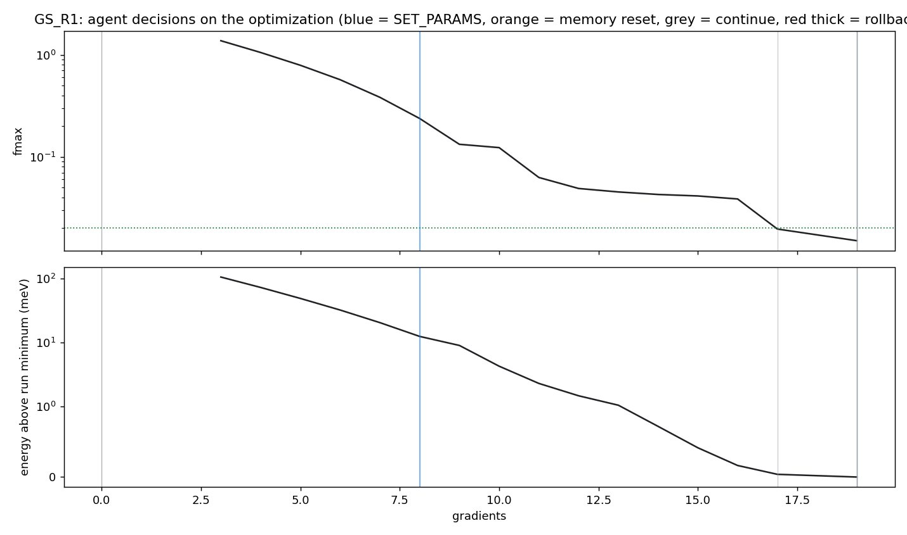
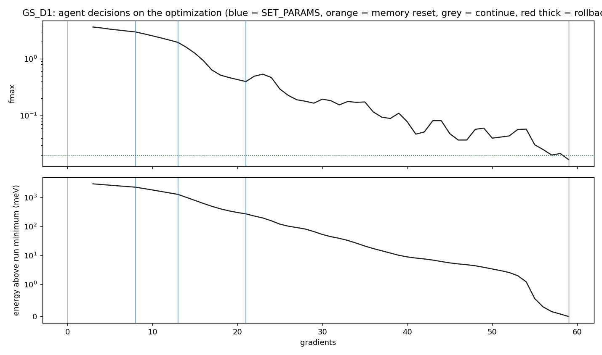
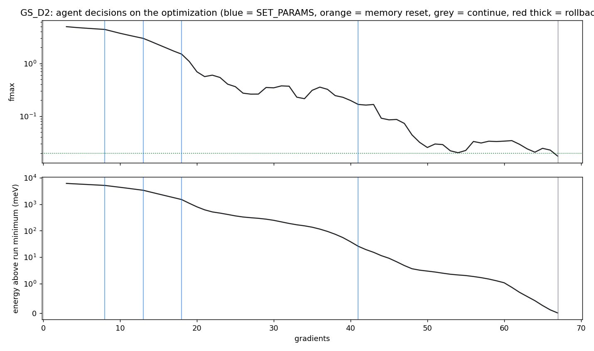

What did the AI agent actually do?
It depends on how far from the answer the run started. In Run 1 (start already close) the agent changed one setting once and otherwise said "carry on". In Run 2 (3.1 eV uphill) it raised the step ceiling three times, and in Run 3 (6.4 eV uphill) four times. Every raise was kept, none needed undoing, and all three runs ended at the same structure.
How the agent is boxed in
The agent is a large language model (Gemini). The program asks it a question at fixed moments, and it answers by choosing one action from a fixed menu. It never moves atoms itself. Each change is tried for five steps ("probation") and is undone if it does not help.
The three runs at a glance
Run 1 · normal start
- Start above the end
- about 0.11 eV
- Optimizer steps
- 16
- Gradient evaluations
- 23
- Time (optimization)
- 4.2 min
- Agent decisions
- 9
- Settings changed
- 1 (step ceiling 0.005 → 0.01 Å)
- Undo needed
- 0
Run 2 · deformed start
- Start above the end
- 3.11 eV
- Optimizer steps
- 57
- Gradient evaluations
- 64
- Time (optimization)
- 12.5 min
- Agent decisions
- 11
- Settings changed
- 3 (step ceiling 0.005 → 0.01 → 0.02 → 0.04 Å)
- Undo needed
- 0
Run 3 · very deformed start
- Start above the end
- 6.38 eV
- Optimizer steps
- 65
- Gradient evaluations
- 72
- Time (optimization)
- 14.4 min
- Agent decisions
- 12
- Settings changed
- 4 (step ceiling 0.005 → 0.01 → 0.02 → 0.04 → 0.05 Å)
- Undo needed
- 0
Same end point: Run 2 finished 0.0072 Å and 0.51 meV from Run 1, and Run 3 finished 0.0051 Å and 0.29 meV from Run 1. All pass the same-structure rule set beforehand (under 0.02 Å and 10 meV).
The agent's sensible moves
It saw when the step limit was holding the run back
When every step hit the ceiling and the energy still fell on every step, the ceiling was setting the pace. The agent raised it, doubling each time: 0.005 → 0.01 → 0.02 → 0.04 Å.
It did more when the start was harder
1, 3 and 4 changes for the starts at 0.11, 3.1 and 6.4 eV. On the easy start it mostly watched.
Every change passed its trial
Each raise was checked over the next five steps. The leftover force fell every time, for example from 1.95 to 0.52 in Run 2 after the second raise. All eight changes were kept; none was rolled back.
It checked the valley and the final shape
Before each run it confirmed there was only one valley to fall into. At the end it checked the ring was flat and the bonds intact before accepting the result.
Two honest limits. Every change the agent made was one the program's built-in step calculator had already proposed, so a plain rule following that calculator would have made the same moves here. And the agent was never consulted during the slow, wobbly finishes, which is where most of the steps went in Runs 2 and 3. We cannot say whether the agent made any run faster: there is no run of the same starts without the agent to compare with.
Run 1, normal start, step by step
Top: the leftover push on the atoms (must fall below the dashed target). Middle: energy still to lose. Bottom: how far the atoms moved each step against the allowed maximum. Diamonds are the agent's decisions; hover one to read it.
One sensible raise, with a good forecast
Steps 1 to 6 all hit the 0.005 Å ceiling, so the agent doubled it. It predicted about 8 more steps and a push near 0.05 after 5 steps. Reality: 9 steps, and 0.045 after 5.
But it only mattered once
After the raise, only step 8 moved further than the old ceiling. The molecule was already near the bottom of the valley, so there was little room to help. The agent also asked to set the optimizer to L-BFGS with memory 20, which it already was.
Check-ins after the finish
The target was met at step 15. The remaining preset rounds each cost one calculation and one agent call.
Run 2, deformed start (3.1 eV), step by step
The agent kept loosening the reins, and each time it helped
For the first 19 steps every move hit the ceiling while the energy fell on every step. The agent raised the ceiling at steps 6, 11 and 19, doubling each time. Each raise was checked for 5 steps and kept. By step 19, 91% of the energy was already gone.
The last raise overshot a little
Right after the ceiling went to 0.04 Å, the push on the atoms went up for two steps (0.40 to 0.54) before falling again. The energy still fell on every step, so nothing went wrong, but the atoms briefly swung past the best path.
Two thirds of the steps went on the last 9%
Steps 20 to 57 (38 steps) removed the last 0.27 eV. In that stretch the push on the atoms went up and down many times while the energy crept down steadily. No warning rule fired, so the agent was never asked. This long tail is where a supervisor could have helped.
Its forecasts were too gloomy early and too rosy late
At step 6 it expected 126 more steps (it took 51). At step 11 it expected the push to reach 1.2 after 5 steps (it reached 0.52). At step 19 it expected 18 more steps (it took 38), because it did not see the slow tail coming.
Run 3, very deformed start (6.4 eV), step by step
Same moves as Run 2, one more time
The agent raised the ceiling at steps 6, 11 and 16 (to 0.01, 0.02, 0.04 Å). Each was kept. By step 20, 92% of the energy was gone.
A fourth raise that changed nothing in practice
At step 39 the moves hit 0.04 Å again for five steps, so the agent raised the ceiling to 0.05 Å, the largest it is allowed. After that no step moved more than 0.024 Å, so the new ceiling was never reached. The change did no harm and was kept, but it did not do any work.
A long finish with a stall near the line
Steps 21 to 65 (45 of 65 steps) removed the last 0.46 eV. Near the end the push sat just above the target for 13 steps before finally crossing. No warning rule fired for that stall, so the agent was not asked.
Forecasts: mixed again
At step 6 it expected 180 more steps (it took 59). At step 16 it expected 32 (it took 49). At step 39 it expected the push to be 0.08 after 5 steps (it was 0.087, close) and 15 more steps (it took 26).
Every decision, in plain words
Each card is one question the program put to the agent, with the agent's own logged reason underneath. Repeated check-ins are grouped.
Run 1 · normal start
Is the molecule in the right valley, and are the starting settings sensible? Yes to both: there is only one valley, and the 0.005 Å step ceiling is kept.
Agent: “There is only a single planar basin (id 0) found across 13 xTB seeds with current geometry already at 0.025 A RMSD and plane_rms_A=0.0037, so no basin switch is…”
Every step is hitting the ceiling and the energy keeps falling. Double the ceiling to 0.01 Å. Expect about 8 more steps. Kept: force 0.24 → 0.045 over the next 5 steps.
Agent: “Steps are fully pinned with cap_saturation=1.0, energy_falling_last5=5, and curvature_ratio=0.28, so maxstep is doubled to 0.01 and optimizer is set to lbfgs_mem20 to accelerate convergence.”
Asked 4 more times at the start of each preset round. The force was already under the target, so nothing was left to do.
Is the final shape sound? Flat ring, bonds intact, close to the reference. Accept it.
Agent: “The final geometry in basin 0 is planar with an intact bond graph and low RMSD to the reference structure, so we continue to finalize the optimization.”
Run 2 · deformed start
Is the molecule in the right valley, and are the starting settings sensible? Yes to both: there is only one valley, and the 0.005 Å step ceiling is kept.
Agent: “There is only one basin (id 0) found by the surrogate with n_seeds=13 and rmsd_to_planar_ref_A=0.0022, and we are already targeting basin 0.”
Every step is hitting the ceiling and the energy falls every step. Raise the ceiling to 0.01 Å. Expected: push about 2.4 after 5 steps, 126 steps to finish. Kept: push 2.98 → 1.95 after 5 steps (better than expected).
Agent: “Steps are pinned with cap_saturation=1.0 and energy falling on every step while fmax is far above target, so raising maxstep to 0.01 as recommended by step_advisor accelerates convergence without instability.”
Still pinned at the ceiling. Double it to 0.02 Å. Expected: push about 1.2 after 5 steps. Kept: push 1.95 → 0.52 after 5 steps (much better than expected).
Agent: “Steps remain pinned at the cap with cap_saturation=1.0 and energy falling on all recent steps while fmax is far above target, so doubling maxstep to 0.02 as recommended by step_advisor.”
Still pinned. Raise to 0.04 Å. Expected: push about 0.25 after 5 steps, 18 steps to finish. Kept: push 0.40 → 0.23 after 5 steps as expected, but the finish took 38 steps, not 18.
Agent: “Steps remain pinned at the cap with cap_saturation=1.0 and energy falling on all recent steps while fmax is far above target, so raising maxstep to 0.04 as advised by step_advisor.”
Asked 5 more times at the start of each preset round. The force was already under the target, so nothing was left to do.
Is the final shape sound? Flat ring, bonds intact, close to the reference. Accept it.
Agent: “At final_check, the geometry is planar in target basin 0 with bond_graph_ok=true and rmsd_to_reference_A=0.019, so the optimization can conclude cleanly.”
Run 3 · very deformed start
Is the molecule in the right valley, and are the starting settings sensible? Yes to both: there is only one valley, and the 0.005 Å step ceiling is kept.
Agent: “There is only a single candidate basin (id=0, found across 13 seeds), so no basin switch is needed and we can continue with the optimization.”
Every step is hitting the ceiling and the energy falls every step. Raise the ceiling to 0.01 Å. Expected: push about 3.5 after 5 steps, 180 steps to finish. Kept: push 4.38 → 2.97 after 5 steps (better than expected).
Agent: “With cap_saturation=1.0, energy_falling_last5=5, and curvature_ratio=0.02, steps are pinned with falling energy, so we switch optimizer to lbfgs_mem20 and double maxstep to 0.01 following step_advisor.”
Still pinned. Double the ceiling to 0.02 Å. Expected: push about 2 after 5 steps. Kept: push 2.97 → 1.50 after 5 steps (better than expected).
Agent: “Steps are pinned at cap_saturation=1.0 with energy falling on every step (energy_falling_last5=5) and fmax far above target, so we raise maxstep to 0.02 as recommended by step_advisor.”
Still pinned. Raise to 0.04 Å. Expected: push about 0.75 after 5 steps, 32 steps to finish. Kept: push 1.50 → 0.54 after 5 steps (better than expected), but the finish took 49 steps.
Agent: “With cap_saturation=1.0, energy_falling_last5=5, and fmax far above target, maxstep is raised from 0.02 to 0.04 A as recommended by step_advisor.”
Moves are hitting 0.04 Å again. Raise to 0.05 Å, the largest allowed. Expected: push 0.08 after 5 steps, 15 steps to finish. Kept: push 0.167 → 0.087 after 5 steps as expected, but no later step used the extra room, and the finish took 26 steps.
Agent: “With cap_saturation=1.0, energy_falling_last5=5, and fmax far above target (0.167 eV/A vs 0.02 eV/A), maxstep is raised from 0.04 to the ceiling of 0.05 A as recommended by step_advisor.”
Asked 5 more times at the start of each preset round. The force was already under the target, so nothing was left to do.
Is the final shape sound? Flat ring, bonds intact, close to the reference. Accept it.
Agent: “The optimization has converged in the target planar basin 0 with an intact bond graph (structure.bond_graph_ok=true) and low planar RMS deviation (structure.pla…”
Bottom line
On the easy start the agent mostly watched. On the hard starts it steered: it loosened the step ceiling whenever the atoms were being held back, all changes were kept, nothing needed undoing, and all three runs landed on the same structure.
Two limits, again: every change was one the built-in calculator had already proposed, and the agent was not consulted during the long finishes. Whether an AI agent beats plain rules on harder molecules is an open question that the released code lets anyone test. See future potential →
Raw plots from the runs
Written by the notebooks during the runs, unedited.






Source: data/module1/*/steps.json, events.json, summary.json and agent_transcript.md. Agent quotes are copied from the logs; nothing here is simulated. Forces are in the units the Module 1 runs used, about 1.89 times smaller than true eV/Å. This scales the force numbers but does not change the shape of any curve or any decision. "Energy still to lose" is measured from each run's own final energy.